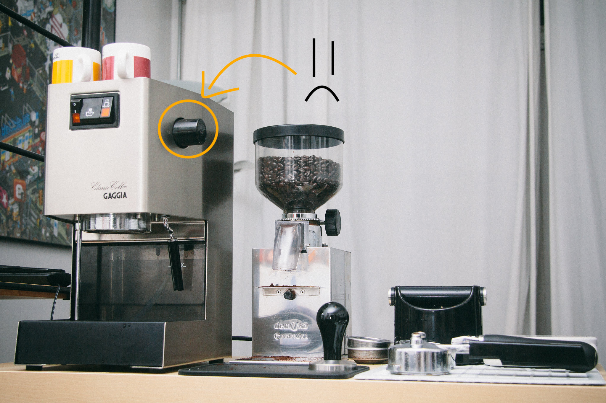
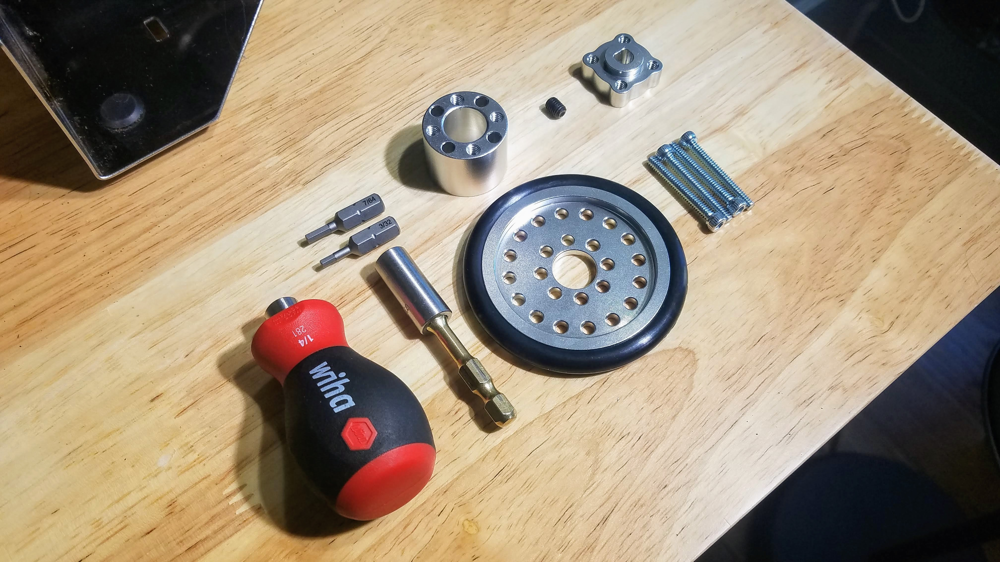
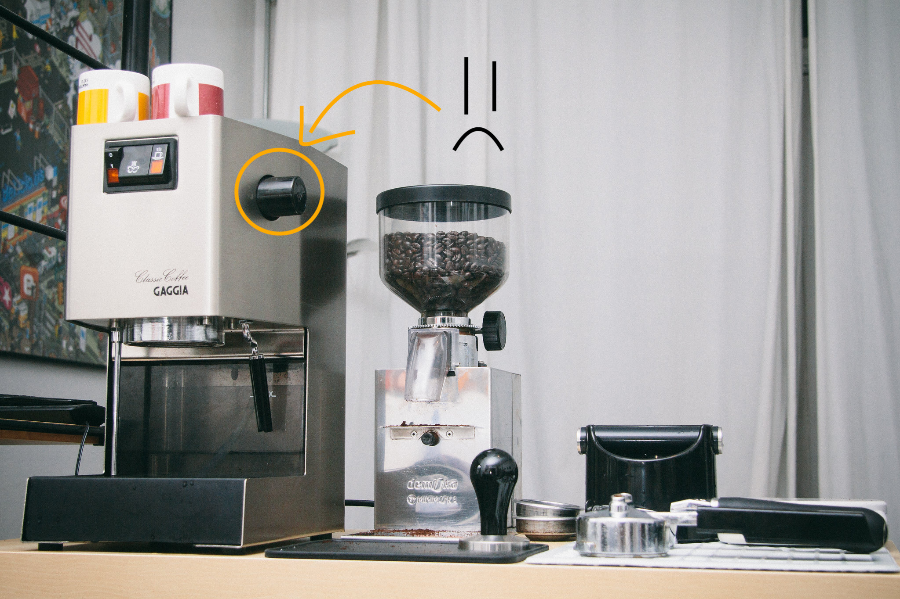
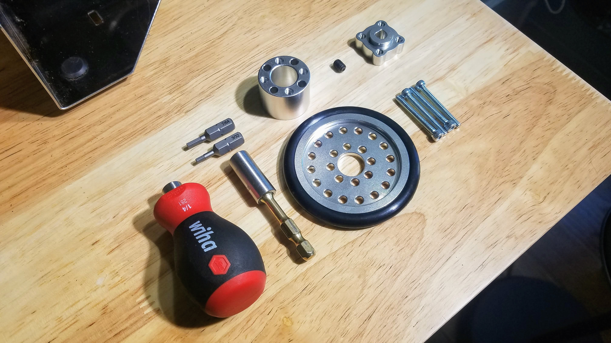

An oft-mentioned shortcoming of the Gaggia Classic is the crappy steam knob. It’s not ergonomic, can break, and is just not that good looking:

Tools and Parts List:

An oft-mentioned shortcoming of the Gaggia Classic is the crappy steam knob. It’s not ergonomic, can break, and is just not that good looking:

